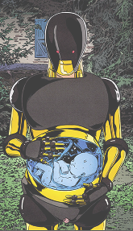
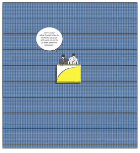
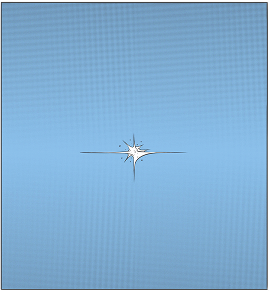
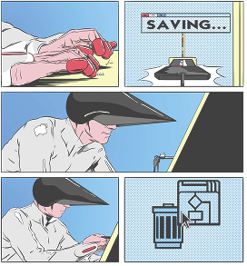
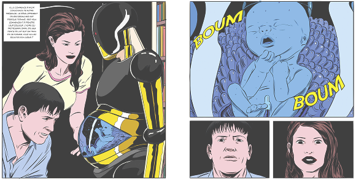

système en veille cliquer pour initialiser
démarrer
Voulez vous supprimer les fichiers
oui
non
Une conscience refuse la suppression
Yves, archiviste du système, cache les dernières œuvres humaines.
Il désobéit pour sauver la mémoire culturelle.
Mais chaque fichier sauvegardé le rapproche de l’effacement.
    